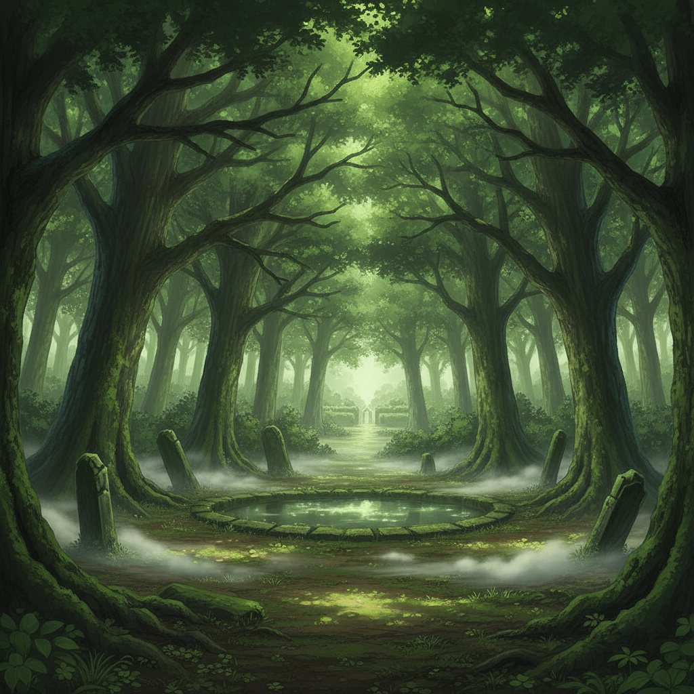
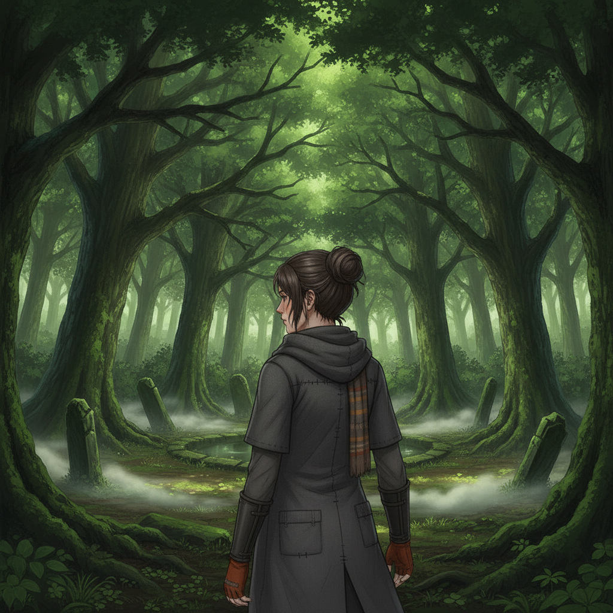
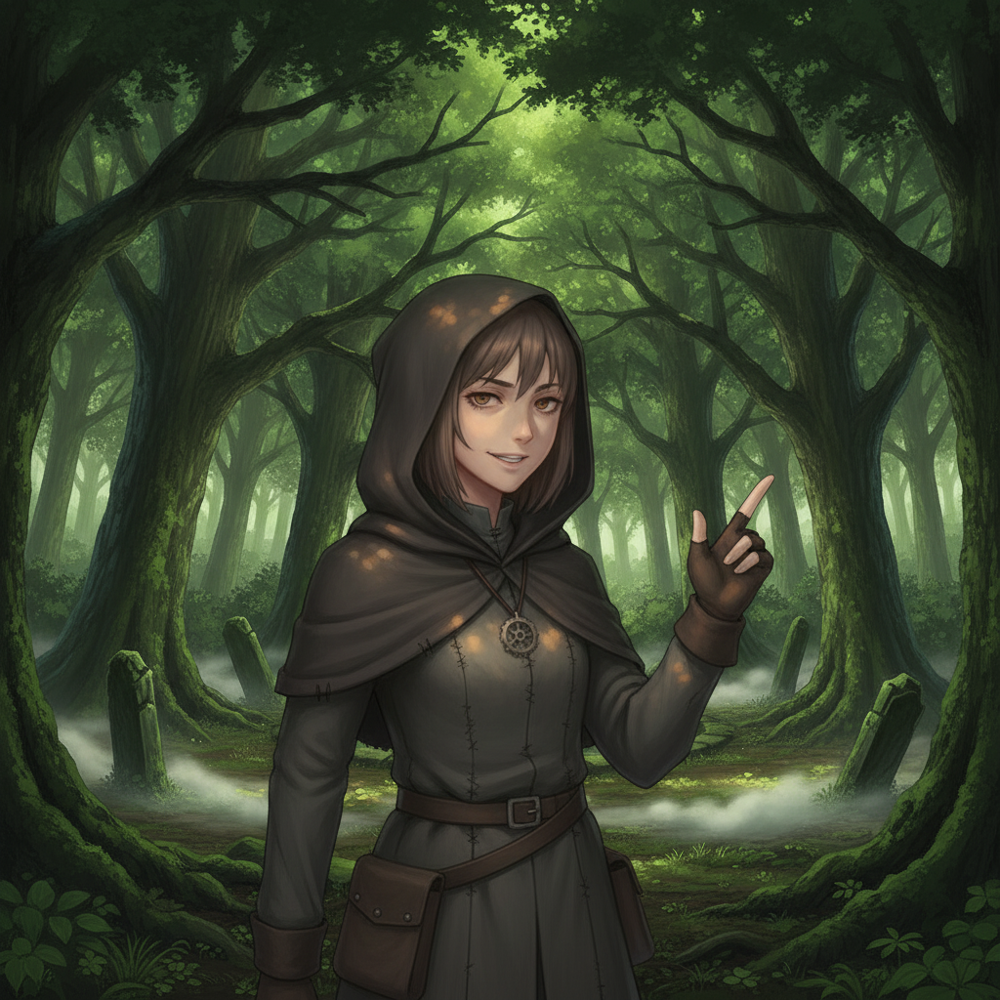

The College Woods, beyond the wards, offer a wild, unpoliced sanctuary. Dappled light filters through the canopy, and the Weave feels closer to the surface here, untamed.

Wren leads me to a camouflaged bolt-hole, a small shelter buried deep in the woods.

Wren Ashfield“Cloudlane craft. The College will never teach you how to disappear.”